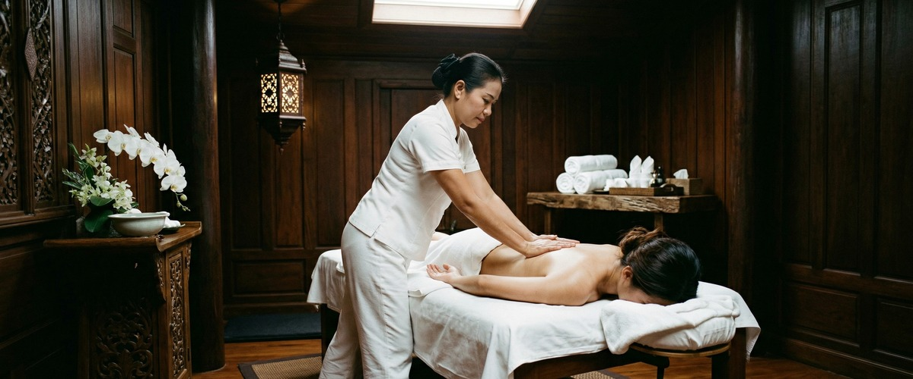
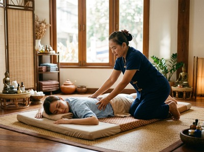

That deep, heavy ache that sets in the day after a hard workout, a long run, or even an unusually active weekend is one of the most common physical complaints people experience.

Sore muscles can make climbing stairs feel like an ordeal and reaching for a high shelf genuinely painful. Thai massage for sore muscles offers a targeted, evidence-informed route to faster recovery, reduced stiffness, and a return to feeling like yourself again.
Delayed onset muscle soreness (DOMS), the medical term for post-exercise muscle pain, is the pain and stiffness felt in muscles after unaccustomed or strenuous exercise. It peaks between 24 and 72 hours after activity and is caused by microscopic damage to muscle fibres, particularly during eccentric movements where the muscle lengthens under load. Think of the descent in a squat, the downstroke in a run, or lifting and lowering weight.

DOMS is not limited to athletes. Office workers returning to exercise, people who've spent a weekend moving house, or anyone whose body has done something unfamiliar can experience it. The result is localised tenderness, reduced range of motion, and a muscle stiffness that makes movement feel guarded and restricted.
Massage works on sore muscles through several overlapping mechanisms: it increases local circulation to flush out metabolic waste products, reduces inflammation at the tissue level, and eases the muscle guarding that stiffness creates. a systematic review and meta-analysis of massage for DOMS found that muscle soreness ratings decreased significantly in participants who received massage compared to those who did not, with the greatest effect seen at 48 hours post-exercise.
Sports massage, a targeted treatment that focuses on specific muscle groups using deep pressure, friction, and compression techniques, is particularly well suited to addressing post-exercise soreness. Swedish massage, which uses long, flowing strokes to stimulate circulation and encourage lymphatic drainage, provides a gentler option that still delivers real physiological benefit. For those carrying chronic muscle tightness alongside exercise-related soreness, hot stone massage can warm and soften deeply held tension before hands-on work begins.
Traditional Thai massage brings an additional dimension: assisted stretching along the body's sen lines encourages muscles to release through their full range of motion rather than simply being compressed. This is especially useful when soreness has caused a protective shortening of the muscle, reducing mobility beyond what the soreness itself would explain.
At Serendipity Massage Therapy & Wellness, your session begins with a short consultation so your therapist understands where you're carrying soreness and what triggered it. Whether you've come in after a race, a tough gym session, or a physically demanding week at work, the treatment is adapted accordingly. You can book your session online and note the areas you'd like focused on before you arrive.
Our therapists, trained in the signature techniques developed by head therapist Jariya Malone, will typically combine targeted pressure work on the affected muscle groups with assisted stretching and mobility work. The pressure is calibrated to what your body can accept at that point in recovery: too much too soon can compound soreness rather than ease it. You leave with muscles that have been genuinely worked through rather than simply pressed on, and most clients notice a significant reduction in stiffness within 24 hours. You'll find us at Central Chambers on Hope Street, right in the heart of Glasgow City Centre, making it an easy stop before or after your working day.
The people who gain most from targeted massage for sore muscles include runners and cyclists in training, gym-goers who regularly push their limits, people returning to exercise after a break, manual workers whose bodies absorb physical strain across a full working week, and anyone who has done something unfamiliar with their body and is now paying for it. Regular sessions, rather than one-off visits, build a baseline of muscular health that makes the soreness of the next hard effort shorter-lived and easier to move through. Book a recovery session and give your body the attention it's asking for.
Yes, with appropriate pressure. Massage applied within 24 to 72 hours of exercise-induced soreness is generally safe and beneficial, but your therapist should know how sore you are so they can calibrate the depth of work. Deep, forceful pressure directly on acutely inflamed tissue can temporarily increase discomfort. A skilled therapist will begin with lighter techniques to warm the tissue before progressing, and will always work within your tolerance.
Research suggests massage is most effective for DOMS when applied between 24 and 48 hours after the exercise that caused the soreness, which is when inflammation and muscle damage are at their peak. A session in this window can meaningfully reduce soreness ratings at the 48-hour and 72-hour marks. Massage applied immediately after very intense exercise is less well supported by evidence, though light work directly post-activity can help with perceived recovery.
Sports massage is the most targeted option, using deep tissue techniques, compression, and cross-fibre friction to address specific muscle groups. Swedish massage is a gentler but still effective choice, particularly for whole-body soreness or for those who prefer lighter pressure. Traditional Thai massage adds assisted stretching that can restore range of motion alongside relief from soreness. Your therapist at Serendipity will advise on the most appropriate approach based on your symptoms and training load.
Both effects are real and both matter. At a physiological level, massage increases local blood flow, supports the removal of metabolic byproducts, and reduces inflammatory markers in muscle tissue. This translates to measurable reductions in soreness at 24, 48, and 72 hours after strenuous exercise, as shown in published meta-analyses. The perceived benefit, feeling less fatigued and more recovered, is also documented in research as a separate and meaningful outcome for athletic performance and motivation.
Regular massage does not prevent DOMS from occurring after genuinely hard or unfamiliar effort, but it can reduce baseline muscle tension and improve tissue quality, which means the body manages subsequent soreness more efficiently. People who receive consistent massage tend to recover faster between sessions and carry less chronic stiffness into their next training block. Building massage into a weekly or fortnightly routine, rather than only booking when things are painful, produces the best long-term results.
Light movement and gentle stretching after a massage session can reinforce the mobility gains made during treatment and help the muscles settle. Avoid high-intensity training for the rest of the day following a deep session, as the tissues need time to integrate the work. Staying hydrated is particularly important after massage, as increased circulation and tissue mobilisation can leave you feeling fatigued if fluid intake is low. Your therapist will give you specific aftercare guidance based on what was done in your session.